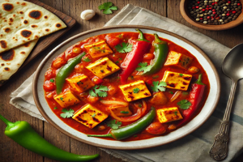

Kadai Paneer Recipe

Ingredients
- 200g paneer, cubed
- 1 tablespoon oil
- 1 onion, chopped
- 1 bell pepper, chopped
- 1 tomato, chopped
- 1/2 teaspoon ginger-garlic paste
- 1/2 teaspoon red chili powder
- 1 teaspoon coriander powder
- Salt to taste
- Coriander leaves for garnish
Steps to Prepare
- Heat oil in a pan, add cumin seeds and let them splutter.
- Add chopped onions and sauté until golden brown.
- Add tomato puree and cook for a few minutes.
- Add turmeric, red chili powder, garam masala, and salt. Stir well.
- Add sliced bell peppers and cook for 2 minutes.
- Add paneer cubes and mix well. Cook for 2-3 minutes.
- Garnish with coriander leaves and serve hot.